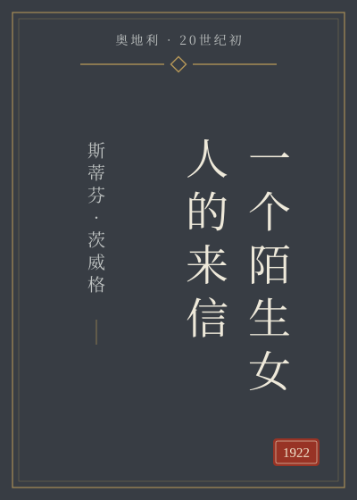
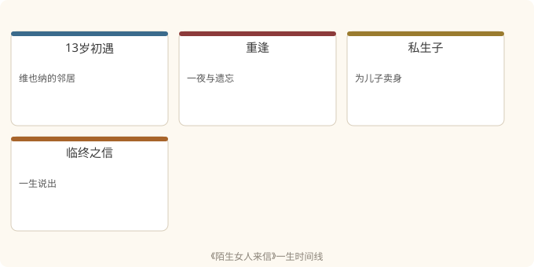

一个陌生女人的来信
一、基本信息
| 作者 | 斯蒂芬·茨威格 |
|---|---|
| 成书/出版 | 1922年结集发表（通说待核；Britannica 该页未单列本篇） Stefan Zweig — Encyclopaedia Britannica（百科全书） |
| 国别/地区 | 奥地利 |
| 时代 | 现当代 · 20世纪初 |
| 体裁 | 中篇小说 |
| 语言 | 德语 |

《陌生女人来信》一生时间线（主题·结构图）
二、创作背景
Britannica：'Zweig's interest in psychology and the teachings of Sigmund Freud led to his most characteristic work, the subtle portrayal of character'（对心理学与弗洛伊德的兴趣造就其最具特色的心理刻画）。
Britannica：茨威格在多个文类皆有成就，尤以虚构与历史人物速写闻名。
三、内容脉络
作家R在41岁生日收到一封无名女人的信——她在临终前写下暗恋一生（通说）。
女人：13岁初遇→单恋一生→一次相会→私生子→卖身抚养→孩子病亡→写信（通说）。
作家始终不曾认出她——『陌生的女人』之谓（通说）。
四、主要人物表
| 人物 | 身份 | 说明 |
|---|---|---|
| 陌生女人 | 写信人 | 绝对奉献的一生（通说） |
| 作家R | 风流作家 | 健忘的接收者 |
五、主题与艺术特点
- 单向的爱与自我消融：『我爱你，但与你无关』（流行概括，通说待核）。
- 记忆与遗忘的不对等（通说）。
- 心理现实主义：书信体的内心独白（通说）。
六、影响与评论
- Britannica：心理刻画为其最具特色的成就（the subtle portrayal of character）。
Stefan Zweig — Encyclopaedia Britannica（百科全书） - 2005年徐静蕾同名电影（移置北平）等多次改编（通说待核）。
Stefan Zweig — Encyclopaedia Britannica（百科全书）
七、阅读建议
难点
- 书信体自白——注意叙述的极端性。
- 爱情观的时代差异。
- 韩耀成/张玉书等译本（《茨威格小说集》，通说待核）。
- 德文原版（公有领域渐近）。
可与《象棋的故事》《一个女人一生中的二十四小时》合读。
八、待核实
- 1922年（首次发表于《大日记》说）与结集《热带癫狂症患者》？细节待核。
- 韩愈？——不：张玉书译本信息待核。
- 高尔基评语出处待核。
本页主要来源
斯蒂芬·茨威格的其他收录作品：一个陌生女人的来信